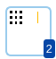

To access: From Calibre WORKbench, . In the Calibre Pattern Generator, select the Pattern Creator (PC) tool by clicking the Tool List icon on the top right and selecting PC Pattern Creator in the menu.
The Pattern Creator (PC) tool creates the pattern templates and libraries used to generate test pattern layouts for RET modeling. The Pattern Creator can create templates for single features and arrays of features.
The Pattern Creator creates and edits the pattern templates and libraries used by the Layout Generator. The Pattern Creator creates custom shapes and places gauges with high degrees of freedom.
Object |
Description |
|---|---|
Pattern Library Display Displays a list of pattern libraries and their patterns. The selected pattern library displays icons for Save Library, Add Pattern, Capture Pattern from CWB, More Actions, and Close Library. More Actions items include Save As Library. |
|
Add Library |
Expands to New, Load, and Built in. New — Creates a new pattern library. Load — Loads an existing pattern library file. Built in — Loads a Calibre-provided pattern library file. For descriptions of the built-in patterns and libraries, see “Calibre Pattern Generator Built-In Test Patterns”. The Pattern Viewer displays the pattern template selected in the Pattern Library Display. |
Capture Pattern from CWB |
Selecting Capture Pattern from CWB displays icons for “Capture using layout clips” and “Capture using csv file clips”. If using CSV file clips, the format of the CSV file must be where
The following is an example of CSV clip file contents: |
Tool List A menu of the tools in Calibre Pattern Generator. |
|
PC |
Pattern Creator Creates and edits pattern templates and libraries. |
LG |
Layout Generator Opens the Layout Generator Window tool. |
SA |
Script Area Opens the Scripting Area Window tool. |
Pattern Viewer Displays the pattern template. |
|
Pattern/Gauge ribbon Click on a shape or gauge from the ribbon and drag it to the desired location in the Pattern Viewer canvas. Supported shapes include Line, Line List, and Line Matrix; supported gauge items include Gauge. |
|
 |
Pattern Content ribbon Click to open a ribbon displaying all shapes and gauges in the pattern template. The number in the ribbon icon displays the total number of shapes and gauges. Use the ribbon to select individual shapes and gauges, and view or edit their properties. |
Zoom All Click to view entire pattern. |
|
Pattern Properties Table Displays pattern properties and values. To add a pattern property, hover over the header and click “+”. To change a pattern property value, click on the value and edit it. To delete a pattern property, hover over the property name and click “X”. To minimize or open the table, click the header. |
|
Pattern Layers Table Displays layer properties and values.
|
|
Log Viewer Displays Calibre Pattern Generator log messages. |
|